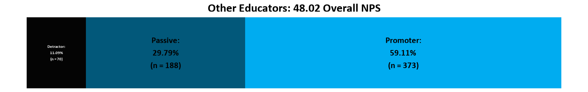
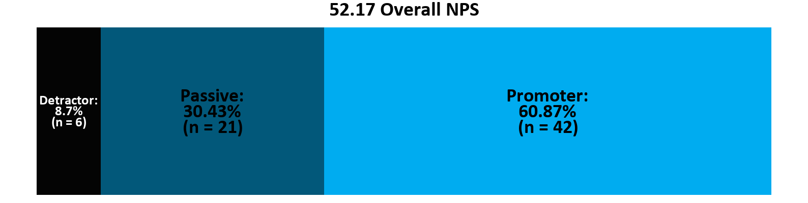

The Basics: What is NPS?
The Net Promoter Score (NPS) first appeared in the Harvard Business Review in 2003, and has since become the prominent and crucial metric for measuring the customer experience and predicting business success. It is, however, not without critique and can often be confusing. In this blog post, we will explore the reasons Teaching Lab uses NPS, its benefits, and its critiques.
NPS’s are measured with a single question and reported with a number from the range -100 to +100, a higher score being desirable.
The NPS question is framed as:
How likely is it that you would recommend our company/product/service to a friend or colleague?
i.e. How likely are you to promote us?
Notice that the question is explicitly not about whether the customer is happy, but about whether the product (in Teaching Lab’s case, service) is something they would attach their own name and credibility to by recommending it to someone they personally know. By this methodology, NPS indicates not only customer satisfaction but customer loyalty. The former indicates attitude, and the latter is behavioral, which has much more remunerative implications.
Respondents answer the question by choosing a number on a scale of 0-10, with 10 meaning they are “extremely likely” to recommend something.
{kind=link}
Respondents are divided into three groups as shown in the above graphic: Promoters, Passives, and Detractors based on their answers.
Promoters: Promoters are likely to enthusiastically recommend your company or service. As stated in the Harvard Business Review: “The only path to profitable growth may lie in a company’s ability to get its loyal customers to become, in effect, its marketing department.”
Passives: Passives are probably satisfied but not as enthusiastic about the company or service compared to a promoter. If another company offers an excellent option, these customers might choose it, as they are not as loyal to you. On a scale of 1-10, their answers are 7 or 8.
Detractor: Detractors can destroy a company with negative reviews. Whether they had an adverse experience or didn’t like the font you use, detractors will likely post about how much they do not like your business. On the other hand, every detractor represents a missed opportunity to add a promoter.
Finally, the answers from all individual customers are then aggregated into one single number, a single company statistic, which is the company’s Net Promoter Score.
{kind=link}
Again, the NPS can range from -100 to 100.
Once calculated, what is a good NPS?
This question is tougher to answer than you might think. Technically, any score above 0 can be considered a “good” score, since it means you have more Promoters than Detractors. According to global NPS standards, a score of above 50 is good, and above 70 is outstanding. Survey Monkey’s global benchmark of 150,000 organizations finds that the average NPS is 32.
And importantly, “good NPS” is industry-specific. In a Qualtrics blog post by Adam Lang that reviews 2020 data for automakers, software, and more, the following ranges were found to be standard for each industry:
{kind=link}
To further complicate things, the NPS can change dramatically given the number of responses. Here is a fun animation from Qualtrics showing how the overall NPS changes as responses come in, giving great insight into the ultimate number. (Note: This is not Teaching Lab data.)
https://www.qualtrics.com/m/assets/wp-content/uploads/2021/11/NPS-Simulation-2.mp4 (will actually embed in the blog post itself)
History, controversy, applicability, alternatives
Net Promoter Score rose to prominence after the release of a 2003 Harvard Business Review article titled “The One Number You Need to Grow.” The overarching message of the article is that the measurement of customer satisfaction and customer retention does not help firms achieve growth; instead, word of mouth is the metric that is linked to growth. In the foundational study for the article by Bain & Company, 400 companies across more than a dozen industries collected data, and then correlations were run comparing NPS to each company’s revenue growth rate (Satmetrix, 2004).
The attention-grabbing headline has, however, had its fair share of critique. Subsequent scholarly research has found that “Net Promoter in no way would be categorized as the single most reliable indicator of a company’s ability to grow“ (Keiningham, 2007). Bain & Company study author Fred Reichheld has even acknowledged its imperfections in the analytics that were used to support Net Promoter:
“All we did was quantify this common sense in a way that made sense to business leaders—the target audience for my book. These practical leaders have little interest in advanced statistical methods. Frankly, we see little value in continued debate about cause versus correlation, timeframes, or statistical methods.”
Further studies have found that actual consumer behavior (recommendation giving) does not necessarily reflect the uniform idea of the question (HBR, 2019), suggesting that human complexity throws yet more issues into the calculation. Another paper, “Measuring Customer Satisfaction and Loyalty: Improving the ‘Net-Promoter’ Score” has even counterintuitively demonstrated that “satisfaction” and “liking” are better predictors of recommendations than “likelihood to recommend” (Schneider, 2008). We can actually even see the potential for this likelihood in Teaching Lab’s data.
{kind=link}
The above figure shows the relationship between NPS and facilitation feedback where each “strongly agree” has been recoded to a 5, “agree” to a 4, and so on until “strongly disagree” is a 1. The data clearly demonstrates that participants can enjoy the facilitation or coaching, but still give a “passive” rating. Additionally, a clear upward diagonal pull in the local polynomial regression model implemented shows that Net Promoter Scores occur at the highest frequency in the 7, 8, 9, and 10 groups, with 5’s across the board being crucial to get a 9 or 10 score. Unfortunately, the 7 and 8 scores are discounted in the NPS calculation. It can at least be clearly stated that NPS is not the only metric to rely on, as promised by Bain & Company.
Hidden behind a low NPS can often be a lot of passive (7 or 8) ratings - check out one of Teaching Lab’s current NPS’s; 31.55% of people giving a 7 or 8 rating can really impact the ultimate, overall NPS.

This is the essence of NPS: even though this number might be lower than our goal, it does not necessarily mean people didn’t like the service; instead, it is intended to measure whether or not they would advocate for the service, something that is much harder to achieve. Think about it: How often do you advocate for a product?
Interestingly, there is a big difference in Teaching Lab’s NPS, depending on the PL audience!
For teachers, the NPS is currently 33.12, which is the lowest among all the PL audience types.
And for contact leads, we have the highest overall NPS!

These bar charts demonstrate the range of the reality of what is being measured - certain people might be more likely to recommend a service in the first place. Additionally note what is impacting the NPS the most here - “other educator” and “teacher” have about the same percent of passive scores, but teachers tend to be detractors (0-6 rating) more often, whereas contact leads in general are more likely to be promoters, and less likely to be either detractors or passive.
Predict your NPS
Use the following model and parameters to predict what your next NPS rating will be! Note that this predictive model is by no means a guarantee, but it predicted today’s NPS scores with 82% accuracy!
The argument for continuing to use NPS
It’s a leading indicator of business growth.
- The logic follows that the more enthusiastic customers you have, the more new customers you can attract (and with less effort or investment), and this cycle becomes a growth engine.
It’s simpler and more productive than traditional customer satisfaction surveys.
- NPS is low friction on both sides, it is easy to evaluate and easy to answer.
It clearly shows where pain points are on the aggregate.
- NPS results show strengths and weaknesses in the customer base, identifying where teams can work to improve customer relations.
The argument against continuing to use NPS
It doesn’t accurately differentiate promoters and detractors.
- The rule-of-thumb score classifications proposed by Reichheld (promoters are those respondents who give a likelihood of recommendation of 9 or 10 while the detractors give 6 or less) could be further refined. This approach may not fully capture the statistical nuances between different respondent groups. Additionally, it might obscure significant trends and lead to misunderstandings about the Net Promoter Score (NPS), suggesting a negative score when the actual scenario might be different.
It can be used incorrectly.
- A common criticism is that companies send the survey too frequently. There are eventually diminishing returns on customer surveys. Results become less representative when survey fatigue starts to set in.
If it is used as the only measure.
- The other common criticism is that companies rely too heavily on NPS alone. They don’t use any other measurements of customer experience and satisfaction to complement the Net Promoter Score. To note: Teaching Lab has comprehensive post-session and post-PL Series participant feedback surveys, in addition to the contact lead survey. NPS is one of many measures for our impact on teaching and learning.
Customer feedback experts have diverse opinions on its applicability across all scenarios.
- When asked to compare the NPS with other loyalty indices, again, only 19% of the customer feedback professionals agreed that the NPS is a better predictor of growth compared to other loyalty indices. The remaining 81% of the customer feedback professionals either disagreed with (~40%) or remained neutral toward (~40%) the statements regarding the merits of the NPS (Hayes, 2008).
No metric is perfect
“All models are wrong, some are useful” - George Box (British statistician). A statement that is especially true for the less than straightforward NPS metric can be shown to be wrong, but if wielded well, it can be useful. Most research suggests sending the surveys frequently, but to different subsets of customers, at regular milestones in the customer lifecycle. Using this methodology you can pivot and tweak your service, rather than getting a static feedback dump every quarter. Teaching Lab adheres to this practice, including it in participant feedback surveys rather than only doing it quarterly or otherwise infrequently.
Lastly, using a customer loyalty index with other questions relevant to your business can be essential in finding specific issues and highlights in customer feedback. Teaching Lab also does this; our participant feedback surveys incorporate 5-point Likert-scale items as well as open-ended items in conjunction with the NPS to provide a more holistic view of participants’ experiences and opinions.
What does this mean for how I interpret feedback data for my partner?
In wrapping up our analysis, it’s crucial to not only consider NPS but also to delve into other vital metrics that offer a broader view of customer satisfaction and loyalty Recently, at Teaching Lab, we’ve introduced targeted qualitative questions based on the respondents’ NPS category to enrich our understanding and add depth to our quantitative data. Detractors are optionally prompted with, “We’re sorry to hear that. What would you like us to improve on?” to identify areas for enhancement. Passive respondents are optionally prompted with “Thank you for your feedback. Would you like to tell us why you would score us that way?” to uncover underlying reasons for their neutrality. Lastly, promoters are asked, “We’re glad you like us. Would you like to tell us what exactly excites you?” to highlight strengths and areas of excellence. This strategic addition aims to provide a more nuanced view of our customer experience, allowing us to tailor our strategies more effectively to meet and exceed customer expectations. To see this new data (and more on participant feedback), head to the Facilitator/Coaching Dashboard and check out the NPS rollup!